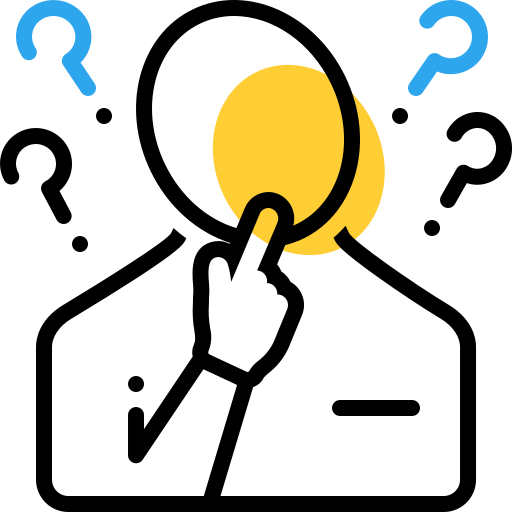

لماذا نحن 
على الرغم من تعدد المراكز الطبية المتخصصة لعلاج أمراض القلب والأوعية الدموية إلا أننا ننفرد بالعديد من المزايا التى تجعلنا الاختيار الأول للمريض ولكل من يبحث عن الوقاية من هذه الأمراض:
 أمراض القلب والأوعية الدموية تتعلق بالعديد من الحالات المرضية الأخرى كارتفاع ضغط الدم
والكوليسترول وما إلى ذلك...
أمراض القلب والأوعية الدموية تتعلق بالعديد من الحالات المرضية الأخرى كارتفاع ضغط الدم
والكوليسترول وما إلى ذلك...
التواجد المستمر على منصات التواصل الاجتماعي على مدار 24 ساعة لتحقيق المتابعة المستمرة.
الاعتماد على أحدث التقنيات والأجهزة العالمية لتوفير خدمة أفضل وأكثر أماناً.
سهولة الحجز ودقة المواعيد وعدم الحاجة إلى الانتظار لفترات طويلة.